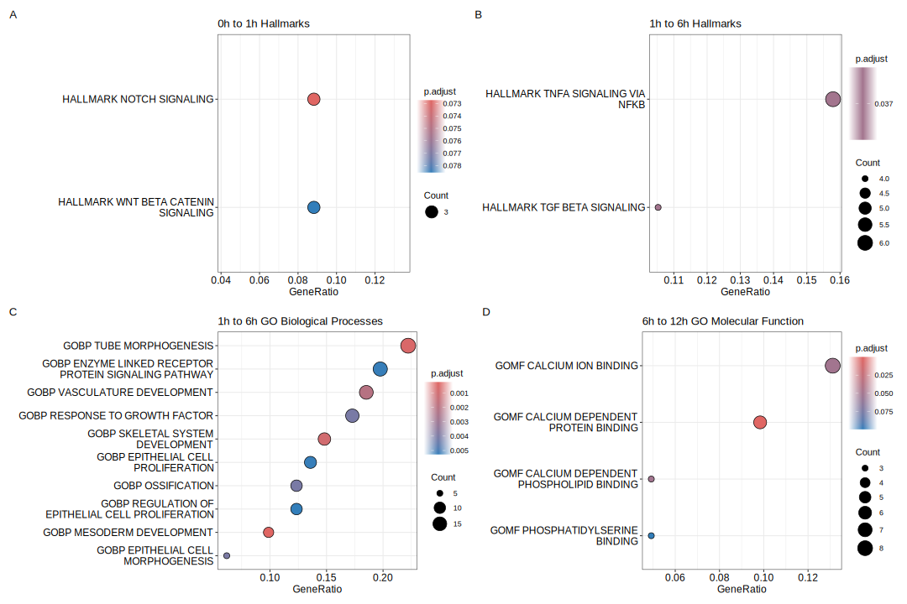

Translation on Demand as a post-transcriptional regulation mechanism of embryonic stem cell differentiation
Master Thesis Defense
2025-09-01
What is Translation on Demand (ToD)?
ToD
is described as a selective and rapid protein synthesis for specific mRNAs without increased mRNA levels
- quick cellular responses during transitions, stresses and signaling stumuli
- Neurons: Local translation at active synapses
- Early Embryos: Stored maternal mRNAs are activated after fertilization
- Stress Response: Rapid synthesis of stress proteins (e.g. heat shock proteins) when needed
Why should we care?
Transcript-Protein Relationship
RNA levels can not fully explain protein abundance for many genes
Mouse vs Human Development
- mESCs differentiate/develop much faster than hESCs
- maybe ToD is a key mechanism that allows this speed
- e.g. enabling the upregulation of key genes to switch gene regulatory networks quickly
ToD may be a key regularoty machanism during development
How are we studying ToD? - 2i Media
GSK3 Inhibitor (CHIR99021)
- Inhibits GSK3 to stabilize β-catenin, promoting Wnt signaling
- Supports pluripotency and helps prevent differentiation
MEK Inhibitor (PD0325901)
- Blocks the ERK pathway to decrease differentiation signalling
The basic idea
Remove 2i → Perform –omics over a timecourse → Analyze changes in genes and their products
Project Goals
[1] Identifying ToD regulated genes
Framework for filtering ToD candidates by comparing transcriptome and proteome layers
[2] What processes are subject to ToD?
Define gene sets / Functional enrichment and annotation
[3] Why are these processes ToD-regulated?
Are those processes critical for transitioning out of the naive state?
[4] How is ToD facilitated by cells?
What are the mechanisms enabling ToD? E.g. regulatory elements in 5’ UTRs, 3’ UTRs, RNA binding proteins, etc.
Experimental Approach, Datasets and Workflow
How can we detect ToD candidates?
Filter for stable transcripts
\[ -R_s \leq \text{LFC}_{\text{between time points}} \leq R_s\]
How can we detect ToD candidates?
Calculate the LFC ratio
\[\text{(1) LFC-Ratio} = \text{logFC}_{\text{between time points protein}} - \text{logFC}_{\text{between time points RNA}}\] \[\text{(2) LFC-Ratio}\geq \text{ToD-threshold}\]
How can we detect ToD candidates?
Look at protein trajectory
\[\text{logFC}_{\text{protein against 0h after ToD call}}\geq \text{logFC}_{\text{protein against 0h during ToD call}} \times (1-R_d)\]
Early time intervals experience more ToD

What processes are subject to ToD?
ToD candidates as Transcription factors
[1] Identify Translation-on-Demand Genes
- Yang time-course: keep genes whose
- Protein LFC » RNA LFC
- RNA stays in “stable” window (-2 ≤ RNA LFC ≤ 2)
438 ToD genes
[2] Isolate Transcription Factors
- Cross-check ToD list with
- AnimalTFDB v4
- TFs are significantly over-represented
46 TFs (10.5% of 438 ToD genes) → p = 0.021
[3] Retain TFs with Mapped Targets
- TEs have curated regulatory networks in
- CollecTRI
22 TFs → taken forward
[4] Infer TF Activity
- decoupleR (ULM) - Every TF-target link has a sign:
- +1 = activator (targets T when TF active)
- -1 = repressor (targets / when TF active)
- ULM regresses target-gene expression on signed weights:
- Activator targets up OR repressor targets down → positive t-value
- Opposite expectations → negative t-value
t-value = TF activity score → heatmap
ToD candidates as Transcription factors
Known important genes during the transition are ToD candidates
- Hsf2: Heat Shock Transcription Factor → protects against cellular stress
- Foxd3: Shuts naïve enhancers → kick-starts exit from naïve state
- Klf10: Member of KLF family → tilts balance toward differentiation
How are these genes selectively post-transcriptionally upregulated?
[1] UTR Collection
Take the 3’-UTR sequences of all Translation-on-Demand (ToD) candidate genes for each time-window.
Target gene UTR sequences
[2] Background
Use the 3’-UTRs of all other genes detected in both transcriptome AND proteome as the control universe.
Control UTR background
[3] Motif Scan (AME, MEME-suite)
Run AME with the CISBP-RNA motif library
- Parameters: Fisher’s exact test, adj-p cut-off < 0.05
Enriched RBP motifs
[4] Check Proteins
Cross-checked enriched RBPs in the Yang proteome to see whether they themselves change over
RBP temporal dynamics
Are RBP motifs enriched in 3’ UTRs of ToD candidates?
RBPs important for early development
- Lin28: interacts within large ribonucleoprotein complexes to modulate translation of key developmental mRNAs
- Pcbp1-3: modulating mRNA stability, alternative splicing as well as translation regulation
- Ptbp1: integrating developmental cues in translational regulation and shape post-transcriptional modification by regulating alternative splicing
The picture so far…
Insights
- ToD is a detectable post-trascriptional regulatory mechanism during early develompent
- ToD aids correct transition from the naive to the formative state
- The biological implications from the data agrees with the proposed purpose of ToD
Signal strenght
We do not have strong biological signals… e.g. in the enrichments, motif enrichmets etc.
Other potential problems
Noise in ToD calling
We should test out other ToD calling methods.
Medium Change Stress confounding
Some LFC-ratios might be confounded by cellular stress during the medium change. Rapid development and stress are sometimes hard to differentiate.
Reproducability
ToD candidates in other datasets are hard to replicate.
Next steps?
- Polysome profiling
- Human dataset ToD calling
- Other data normalization methods (GPR, LOESS) → better suitable for temporal data with small replicate number

Thank you so much, Beyer Crew!
Supervisor:
special thanks to Luke Brandwood
Reviewers:
a huge thanks goes to…
- Prof. Dr. Andreas Beyer
- Prof. Dr. Achim Tresch

Datasets for Translation on Demand
| Dataset | Temporal resolution | Replicates Transcriptomics | Replicates Proteomics | Organism |
|---|---|---|---|---|
| Yang Data | 0, 1, 6, 12, 24, 48, 72 | 2 | 4 | Mice |
| Leeb TC Data (Time Course) | 0, 4, 8, 12, 24, 32 | 1 | 4 | Mice |
| Leeb (MC) Data Medium Change | 0, 4, 8 | 3 | 4 | Mice |
| Leeb Human TC | 0, 1, 12, 48, 72, 96 | 2 | 4 | Human |
- In the making: Polysome Profiling